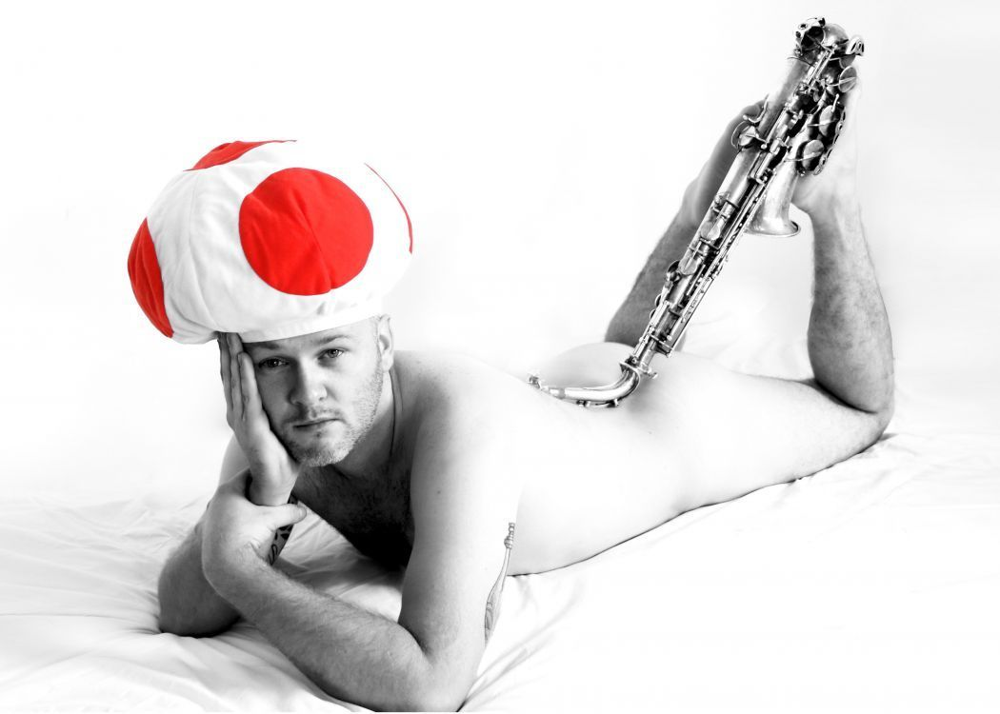
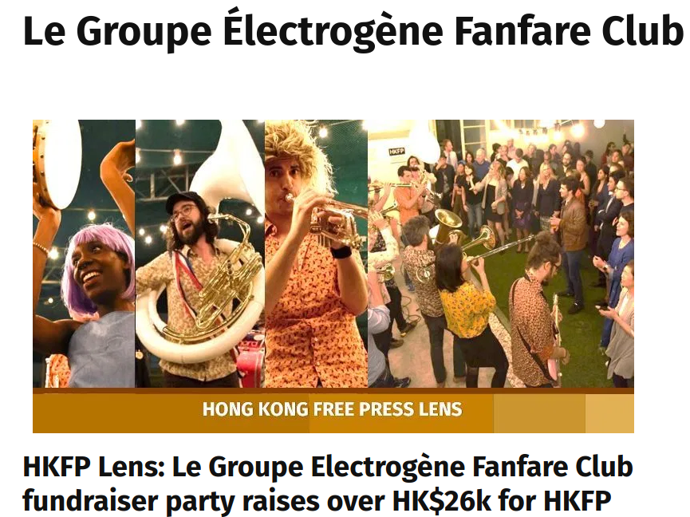
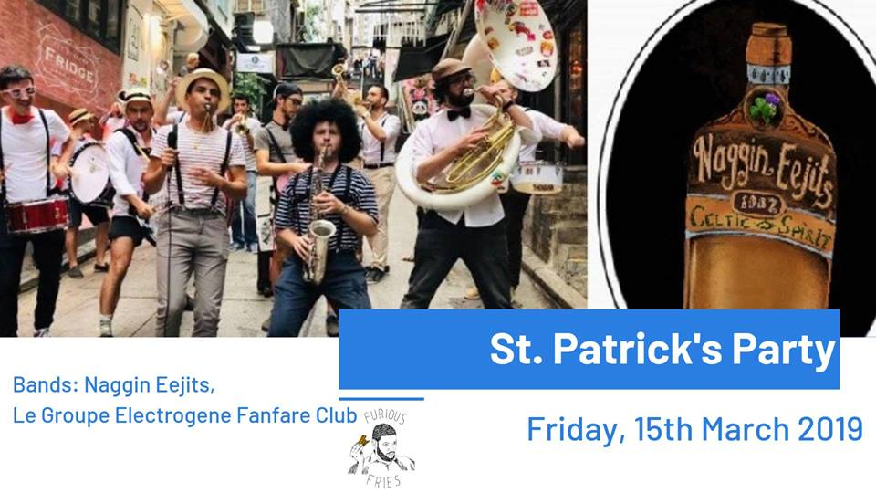
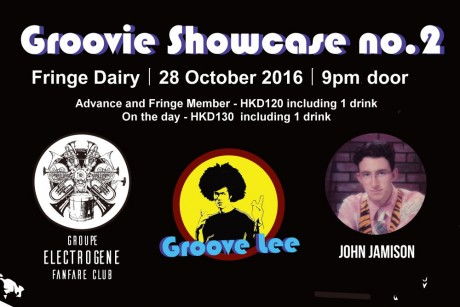

Electrogene Fanfare Club Website
C'est nous :)
Le repertoche
Les paroles
Les concerts / performances
Ils parlent de nous & Collabs
Ze Story !
WE ARE THE WORLD, WE ARE THE PEOPLE
Si tu tiens plus de 10 secondes sur cette page, sans vomir, sans faire une crise d'epilepsie, alors bravo ! Tu es pret pour venir a un concert de la fanfare \(^o^)/
Le Wine and Dine Festival
La fanfe à l'air, en toute décontraction, pépouze et pour la bonne cause !

HONG KONG FREE PRESS
On ne leve pas que le coude, mais de l'argent pour une presse indépendante aussi :)

SAINT PATRICK
On joue avec les irlandais, pour célebrer notre saint, notre pur, notre honnete : PATOCHE !

SAINT PATOCHE
Les concerts du Groupe Electrogène Fanfare Club ont prouvé depuis de nombreuses années soigner les problèmes de dos et permettre d'échapper à la justice. "Patoche" un fidèle fan du groupe commente: "Depuis que je vais régulièrement aux concerts du Groupe Electrogène Fanfare Club, tous mes problèmes de dos sont derrière moi et la prison est un lointain souvenir, je peux maintenant me trémousser au son de leurs rythmes endiablés dans mon petit pull rose.
HK FRINGE CLUB
Parfois on fait de vrais concerts, avec de vrais groupes, dans de vrais salles !
